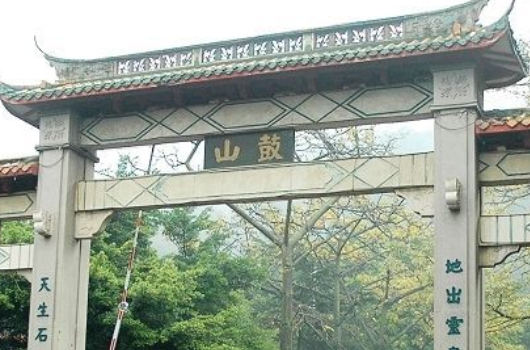

鼓山风景区
鼓山位于福建省福州市晋安区东部、闽江北岸，距离市中心区约8公里，是福州最著名的风景区之一。
鼓山是国家AAAA级旅游景区，也是国家级风景名胜区。2002年5月，福建省鼓山风景名胜区经国务院批准列入第四批国家级风景名胜区名单。
鼓山景区以古刹涌泉寺为中心，东有回龙阁、灵源洞等20多景；西有洞壑数十景，其中以十八景尤著；南有罗汉台、香炉峰等50多景；北有大顶峰、白云洞等45景。这些景点主要由花岗岩经长期剥蚀、风化、崩塌、堆积而成，千姿百态，构成蟠桃林、刘海钓蟾、玉笋峰、八仙岩和喝水岩等自然景观。此外，还有历代摩崖石刻多处。
